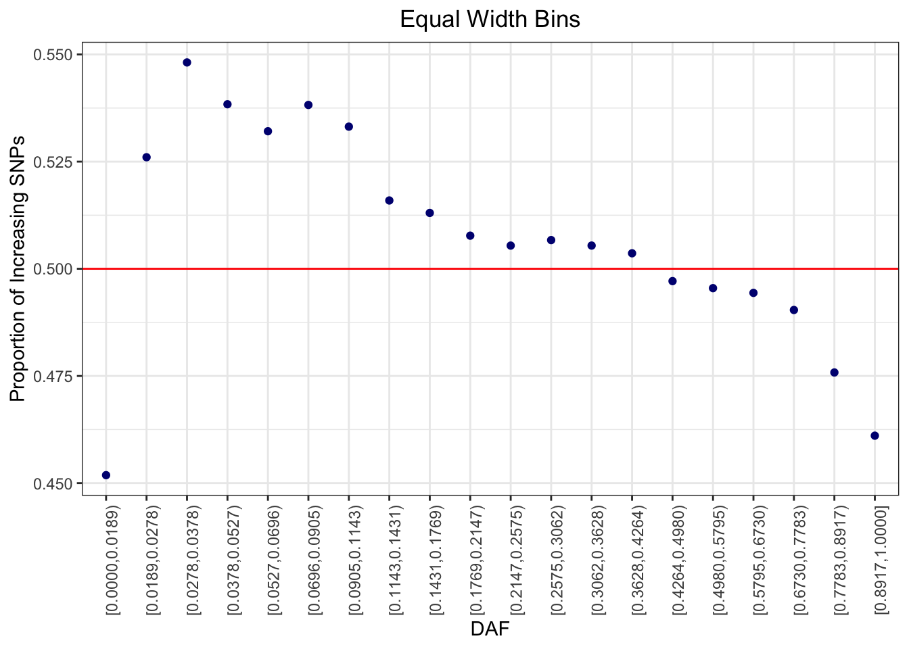

scratch
Jennifer Blanc
6/14/2020
Last updated: 2020-06-16
Checks: 7 0
Knit directory: infer_mutational_bias/analysis/
This reproducible R Markdown analysis was created with workflowr (version 1.6.0). The Checks tab describes the reproducibility checks that were applied when the results were created. The Past versions tab lists the development history.
Great! Since the R Markdown file has been committed to the Git repository, you know the exact version of the code that produced these results.
Great job! The global environment was empty. Objects defined in the global environment can affect the analysis in your R Markdown file in unknown ways. For reproduciblity it’s best to always run the code in an empty environment.
The command set.seed(20191108) was run prior to running the code in the R Markdown file. Setting a seed ensures that any results that rely on randomness, e.g. subsampling or permutations, are reproducible.
Great job! Recording the operating system, R version, and package versions is critical for reproducibility.
Nice! There were no cached chunks for this analysis, so you can be confident that you successfully produced the results during this run.
Great job! Using relative paths to the files within your workflowr project makes it easier to run your code on other machines.
Great! You are using Git for version control. Tracking code development and connecting the code version to the results is critical for reproducibility. The version displayed above was the version of the Git repository at the time these results were generated.
Note that you need to be careful to ensure that all relevant files for the analysis have been committed to Git prior to generating the results (you can use wflow_publish or wflow_git_commit). workflowr only checks the R Markdown file, but you know if there are other scripts or data files that it depends on. Below is the status of the Git repository when the results were generated:
Ignored files:
Ignored: .DS_Store
Ignored: .Rhistory
Ignored: .Rproj.user/
Ignored: .snakemake/conda-archive/
Ignored: .snakemake/conda/
Ignored: .snakemake/locks/
Ignored: .snakemake/shadow/
Ignored: .snakemake/singularity/
Ignored: analysis/.DS_Store
Ignored: code/.DS_Store
Ignored: code/parse_gwas_atlas/.DS_Store
Ignored: code/parse_gwas_atlas_nonsig/.DS_Store
Ignored: data/.ipynb_checkpoints/
Ignored: data/1000G_20101123_v3_GIANT_chr1_23_minimacnamesifnotRS_CEU_MAF0.01/
Ignored: data/ALL.chr1.phase3_shapeit2_mvncall_integrated_v5a.20130502.genotypes.EUR/
Ignored: data/GWAS_ATLAS/
Ignored: data/LD_Blocks/
Ignored: data/MISC_GWAS/
Ignored: data/STRAT/
Ignored: data/UKBB/
Ignored: output/.DS_Store
Ignored: output/47UKBB/
Ignored: output/BBJ/.DS_Store
Ignored: output/GWAS_ATLAS/
Ignored: output/STRAT/
Ignored: output/UKBB/.DS_Store
Untracked files:
Untracked: .snakemake/log/2020-03-23T164719.122778.snakemake.log
Untracked: .snakemake/log/2020-03-23T164841.172341.snakemake.log
Untracked: .snakemake/log/2020-03-23T165052.235224.snakemake.log
Untracked: .snakemake/log/2020-03-23T173201.671245.snakemake.log
Untracked: .snakemake/log/2020-03-23T190924.512591.snakemake.log
Untracked: .snakemake/log/2020-03-23T194341.864454.snakemake.log
Untracked: .snakemake/log/2020-03-24T091905.302205.snakemake.log
Untracked: .snakemake/log/2020-03-24T092201.882781.snakemake.log
Untracked: .snakemake/log/2020-03-24T092404.171989.snakemake.log
Untracked: .snakemake/log/2020-03-24T092428.802361.snakemake.log
Untracked: .snakemake/log/2020-03-24T093017.568005.snakemake.log
Untracked: .snakemake/log/2020-03-24T093241.050903.snakemake.log
Untracked: .snakemake/log/2020-03-24T093254.384314.snakemake.log
Untracked: .snakemake/log/2020-03-24T093258.136407.snakemake.log
Untracked: .snakemake/log/2020-03-24T093449.542770.snakemake.log
Untracked: .snakemake/log/2020-03-24T111104.620227.snakemake.log
Untracked: .snakemake/log/2020-03-24T111633.863041.snakemake.log
Untracked: .snakemake/log/2020-03-24T111701.823844.snakemake.log
Untracked: .snakemake/log/2020-03-24T152044.472618.snakemake.log
Untracked: .snakemake/log/2020-03-24T152202.883346.snakemake.log
Untracked: .snakemake/log/2020-03-24T152218.356089.snakemake.log
Untracked: .snakemake/log/2020-03-24T152224.553347.snakemake.log
Untracked: .snakemake/log/2020-03-24T152253.175681.snakemake.log
Untracked: .snakemake/log/2020-03-24T152612.976687.snakemake.log
Untracked: .snakemake/log/2020-03-24T152904.986735.snakemake.log
Untracked: .snakemake/log/2020-03-24T154155.249321.snakemake.log
Untracked: .snakemake/log/2020-03-24T154220.752872.snakemake.log
Untracked: .snakemake/log/2020-03-24T154225.402696.snakemake.log
Untracked: .snakemake/log/2020-03-24T154242.303180.snakemake.log
Untracked: .snakemake/log/2020-03-24T154540.706170.snakemake.log
Untracked: .snakemake/log/2020-03-24T154744.109794.snakemake.log
Untracked: .snakemake/log/2020-03-24T154756.043621.snakemake.log
Untracked: .snakemake/log/2020-03-24T155047.465119.snakemake.log
Untracked: .snakemake/log/2020-03-24T155100.393951.snakemake.log
Untracked: .snakemake/log/2020-03-24T155721.217180.snakemake.log
Untracked: .snakemake/log/2020-03-24T155802.251555.snakemake.log
Untracked: .snakemake/log/2020-03-24T155823.527017.snakemake.log
Untracked: .snakemake/log/2020-03-24T160158.325053.snakemake.log
Untracked: .snakemake/log/2020-03-24T160554.632453.snakemake.log
Untracked: .snakemake/log/2020-03-24T160813.358275.snakemake.log
Untracked: .snakemake/log/2020-03-24T161022.670871.snakemake.log
Untracked: .snakemake/log/2020-03-24T161257.193338.snakemake.log
Untracked: .snakemake/log/2020-03-30T171337.338623.snakemake.log
Untracked: .snakemake/metadata/b3V0cHV0L0dXQVNfQVRMQVMvZXZvX2FkZGVkL0NBRF8zOTI1LTAuMDAwMV9ldm8udHh0
Untracked: .snakemake/metadata/b3V0cHV0L0dXQVNfQVRMQVMvZXZvX2FkZGVkL1QyRF80MDg1LTAuMDAwMV9ldm8udHh0
Untracked: .snakemake/metadata/b3V0cHV0L0dXQVNfQVRMQVMvZXZvX2FkZGVkL1VDXzIwMzAtMC4wMDAxX2V2by50eHQ=
Untracked: .snakemake/metadata/b3V0cHV0L0dXQVNfQVRMQVMvZXZvX2FkZGVkL2hlaWdodF8xNDItMC4wMDAxX2V2by50eHQ=
Untracked: .snakemake/metadata/b3V0cHV0L0dXQVNfQVRMQVMvZXZvX2FkZGVkL3NjaGl6b3BocmVuaWFfMzk4Mi0wLjAwMDFfZXZvLnR4dA==
Untracked: .snakemake/metadata/b3V0cHV0L0dXQVNfQVRMQVMvcGFyc2VkX2d3YXMvQ0FEXzM5MjVfMC4wMDAxX3BhcnNlZC50eHQ=
Untracked: .snakemake/metadata/b3V0cHV0L0dXQVNfQVRMQVMvcGFyc2VkX2d3YXMvVDJEXzQwODVfMC4wMDAxX3BhcnNlZC50eHQ=
Untracked: .snakemake/metadata/b3V0cHV0L0dXQVNfQVRMQVMvcGFyc2VkX2d3YXMvVUNfMjAzMF8wLjAwMDFfcGFyc2VkLnR4dA==
Untracked: .snakemake/metadata/b3V0cHV0L0dXQVNfQVRMQVMvcGFyc2VkX2d3YXMvaGVpZ2h0XzE0Ml8wLjAwMDFfcGFyc2VkLnR4dA==
Untracked: .snakemake/metadata/b3V0cHV0L0dXQVNfQVRMQVMvcGFyc2VkX2d3YXMvc2NoaXpvcGhyZW5pYV8zOTgyXzAuMDAwMV9wYXJzZWQudHh0
Untracked: .snakemake/metadata/b3V0cHV0L0dXQVNfQVRMQVMvcHJ1bmVkL0NBRF8zOTI1XzAuMDAwMS5wcnVuZS5pbg==
Untracked: .snakemake/metadata/b3V0cHV0L0dXQVNfQVRMQVMvcHJ1bmVkL1QyRF80MDg1XzAuMDAwMS5wcnVuZS5pbg==
Untracked: .snakemake/metadata/b3V0cHV0L0dXQVNfQVRMQVMvcHJ1bmVkL1VDXzIwMzBfMC4wMDAxLnBydW5lLmlu
Untracked: .snakemake/metadata/b3V0cHV0L0dXQVNfQVRMQVMvcHJ1bmVkL2hlaWdodF8xNDJfMC4wMDAxLnBydW5lLmlu
Untracked: .snakemake/metadata/b3V0cHV0L0dXQVNfQVRMQVMvcHJ1bmVkL3NjaGl6b3BocmVuaWFfMzk4Ml8wLjAwMDEucHJ1bmUuaW4=
Untracked: .snakemake/scripts/tmp7997be50.get_evolutionary_information_from_1kg_GWAS_ATLAS.py
Untracked: Untitled.Rmd
Untracked: analysis/GWAS_Atlas_LD_Blocks.Rmd
Untracked: analysis/Instrumental_variable.Rmd
Untracked: analysis/LD_Block_Jacknife.Rmd
Untracked: analysis/test.Rmd
Untracked: code/LD_Block/
Untracked: code/parse_gwas_atlas_nonsig/height_142.R
Untracked: code/pc_regression.rds
Untracked: code/pc_regression.stan
Untracked: code/pc_regression_da.rds
Untracked: code/pc_regression_da.stan
Untracked: code/pc_regression_gwas.R
Untracked: code/pc_regression_parameters.R
Untracked: code/rsID_Pos_conversion.py
Untracked: code/rsID_Pos_conversion.py~
Untracked: output/GWAS_ATLAS_ANNOTATED/
Untracked: output/PC_REG/
Unstaged changes:
Modified: .snakemake/metadata/b3V0cHV0L1NUUkFUL3BydW5lZC9jaHIxX0VVUl8wLjA1LmVpZ2VudmVjLnZhci5EQS5wcnVuZS5pbg==
Modified: .snakemake/metadata/b3V0cHV0L1NUUkFUL3BydW5lZC9jaHIxX0VVUl8wLjAxLmVpZ2VudmVjLnZhci5EQS5wcnVuZS5pbg==
Modified: .snakemake/metadata/b3V0cHV0L1NUUkFUL3BydW5lZC9jaHIxX0VVUl8wLjEuZWlnZW52ZWMudmFyLkRBLnBydW5lLmlu
Modified: .snakemake/metadata/b3V0cHV0L1NUUkFUL3BydW5lZC9jaHIxX0VVUl8wLjIuZWlnZW52ZWMudmFyLkRBLnBydW5lLmlu
Modified: .snakemake/metadata/b3V0cHV0L1NUUkFUL3BydW5lZC9jaHIxX0VVUl8wLjMuZWlnZW52ZWMudmFyLkRBLnBydW5lLmlu
Modified: .snakemake/metadata/b3V0cHV0L1NUUkFUL3BydW5lZC9jaHIxX0VVUl8wLjQuZWlnZW52ZWMudmFyLkRBLnBydW5lLmlu
Modified: analysis/GWAS_ATLAS_results.Rmd
Modified: analysis/Stratification.Rmd
Modified: analysis/misc_gwas.Rmd
Modified: analysis/shift_GWAS_ATLAS.Rmd
Modified: code/Neal_UKBB.R
Deleted: code/Untitled.ipynb
Deleted: code/make_DA_dict.py
Deleted: code/make_DA_dict.py~
Modified: code/parse_gwas_atlas/schizophrenia_3982.R
Modified: code/parse_gwas_atlas_nonsig/CAD_3925.R
Modified: code/parse_gwas_atlas_nonsig/T2D_4085.R
Modified: code/parse_gwas_atlas_nonsig/UC_2030.R
Modified: code/parse_gwas_atlas_nonsig/schizophrenia_3982.R
Modified: snakefile
Modified: snakefile~
Note that any generated files, e.g. HTML, png, CSS, etc., are not included in this status report because it is ok for generated content to have uncommitted changes.
These are the previous versions of the R Markdown and HTML files. If you’ve configured a remote Git repository (see ?wflow_git_remote), click on the hyperlinks in the table below to view them.
| File | Version | Author | Date | Message |
|---|---|---|---|---|
| Rmd | aa43280 | jgblanc | 2020-06-16 | added comparison |
| html | 9fa9f63 | jgblanc | 2020-06-15 | Build site. |
| Rmd | cd1a0f0 | jgblanc | 2020-06-15 | process |
Code
Read in summary statistics
read_ss <- function(name) {
df <- fread(paste0("~/Desktop/",name, ".txt"))
return(df)
}Pick only GWAS Significant SNPs
sig_snps <- function(df, threshold) {
out <- df %>% filter(P < threshold)
return(out)
}Pick lowest p-value SNP per block
lowest_pval <- function(df) {
out <- df %>% group_by(LD_BLOCK) %>% arrange(P) %>% slice(1)
return(out)
}Pick SNPs below a given threshold
nonsig_snps <- function(df, threshold) {
out <- df %>% filter(abs(ES) <= threshold)
}Proportion of derived alleles that increase the trait
increasing_derived_alleles <- function(df) {
#return(sum(df$ES_DERIVED > 0)/nrow(df))
return(sum(df$INCREASING_DERIVED == 'T')/nrow(df))
}Proportion of derived alleles that increase the trait for multiple thresholds
increasing_derived_alleles_thresolds <- function(data) {
data <- data %>% filter(ES != 0)
df <- matrix(NA, nrow = 5, ncol = 3)
colnames(df) <- c("Prop_Inc", "Num_SNPs", "Threshold")
threshold <- c(1e-2, 1e-3, 1e-4, 1e-5, 1e-6)
for (i in 1:5) {
non_sig <- nonsig_snps(data, threshold[i])
df[i,3] <- threshold[i]
df[i,1] <- increasing_derived_alleles(non_sig)
df[i,2] <- nrow(non_sig)
data <- non_sig
}
return(df)
}Proportion of Derived increasing alleles per bin
increasing_derived_alleles_DAF <- function(data) {
#dat$bin <- cut(dat$DAF, 20)
data$bin <- cut2(data$DAF, m=nrow(data)/20)
df <- data %>% group_by(bin) %>% summarise(num_snps = n(),prop_risk = sum(INCREASING_DERIVED == 'T')/n())
return(df)
}Make ES vs IAF plot
derive <- c("springgreen4", "purple1")
make_plot <- function(df, name) {
pl <- ggplot(data=df, aes(x=IAF,y=abs(ES), color = INCREASING_DERIVED)) + geom_point(alpha=0.5, size=2) + theme_classic() + ggtitle(name) + labs(y = "Effect Size", x = "Trait Increaseing Allele Frequency",color = "Risk Derived")+ ylim(0,max(abs(df$ES)+0.01)) + xlim(0,1) + scale_color_manual(values = derive) + theme(plot.title = element_text(hjust = 0.5, size = 20), axis.text.x = element_text(size = 10), axis.text.y = element_text(size = 10), axis.title.x = element_text(size = 18), axis.title.y = element_text(size = 18), legend.title = element_text(size = 14), legend.text = element_text(size = 14), legend.position = "bottom")
return(pl)
}Make DAF vs Proportion of Trait Increasing allele
make_daf_plot <- function(df) {
pl <- ggplot(df, aes(x=bin, y=prop_risk)) + geom_point(col = "navy") + geom_hline(yintercept = 0.5, col = "red") + theme_bw() + xlab("DAF") + ylab("Proportion of Increasing SNPs") + theme(axis.text.x = element_text(angle = 90, hjust = 1)) + ggtitle("Equal Width Bins") + theme(plot.title = element_text(hjust = 0.5))
return(pl)
}Randomly sample x number of SNPs per LD block
sample_snps <- function(data, num_snps) {
df <- data %>% group_by(LD_BLOCK) %>% sample_n(num_snps)
return(df)
}ADHD
data <- fread("~/Desktop/ADHD_PGC.txt")
tbl <- increasing_derived_alleles_thresolds(data)
kable(tbl)| Prop_Inc | Num_SNPs | Threshold |
|---|---|---|
| 0.4989474 | 2375106 | 1e-02 |
| 0.4997036 | 237845 | 1e-03 |
| 0.5468171 | 12410 | 1e-04 |
| NaN | 0 | 1e-05 |
| NaN | 0 | 1e-06 |
ALL SNPs
df <- increasing_derived_alleles_DAF(data)`summarise()` ungrouping output (override with `.groups` argument)make_daf_plot(df)
| Version | Author | Date |
|---|---|---|
| 9fa9f63 | jgblanc | 2020-06-15 |
sig <- sig_snps(data, 1e-3)
df <- increasing_derived_alleles_DAF(sig)`summarise()` ungrouping output (override with `.groups` argument)make_daf_plot(df)
Non-significant SNPs (BETA < 1e-4)
non_sig <- nonsig_snps(data, 1e-4)
df <- increasing_derived_alleles_DAF(non_sig)`summarise()` ungrouping output (override with `.groups` argument)make_daf_plot(df)OCD
data <- fread("~/Desktop/OCD_PGC.txt")
data <- data %>% filter(ES != 0) # Remove SNPs that are not risk or protective
tbl <- increasing_derived_alleles_thresolds(data)
kable(tbl)| Prop_Inc N | um_SNPs T | hreshold |
|---|---|---|
| 0.4999073 | 1110760 | 1e-02 |
| 0.5038397 | 106258 | 1e-03 |
| 0.5612085 | 5759 | 1e-04 |
| NaN | 0 | 1e-05 |
| NaN | 0 | 1e-06 |
ALL SNPs
df <- increasing_derived_alleles_DAF(data)`summarise()` ungrouping output (override with `.groups` argument)increasing_derived_alleles(data)[1] 0.5106481make_daf_plot(df)
| Version | Author | Date |
|---|---|---|
| 9fa9f63 | jgblanc | 2020-06-15 |
Very Non-significant SNPs (BETA < 1e-4)
non_sig <- nonsig_snps(data, 1e-4)
df <- increasing_derived_alleles_DAF(non_sig)`summarise()` ungrouping output (override with `.groups` argument)make_daf_plot(df)More significant SNPs (P < 1e-3)
sig <- sig_snps(data, 1e-3)
df <- increasing_derived_alleles_DAF(sig)`summarise()` ungrouping output (override with `.groups` argument)Overall Health Rating
data <- fread("~/Desktop/overall_health_rating.txt")
tbl <- increasing_derived_alleles_thresolds(data)
kable(tbl)| Prop_Inc N | um_SNPs T | hreshold |
|---|---|---|
| 0.4994874 | 9383315 | 1e-02 |
| 0.4986912 | 2101573 | 1e-03 |
| 0.4965884 | 213537 | 1e-04 |
| 0.4987348 | 21340 | 1e-05 |
| 0.4969498 | 2131 | 1e-06 |
data <- data %>% filter(ES != 0)
increasing_derived_alleles(data)[1] 0.4997188ALL SNPs
df <- increasing_derived_alleles_DAF(data)`summarise()` ungrouping output (override with `.groups` argument)make_daf_plot(df)
Non-significant SNPs (BETA < 1e-4)
non_sig <- nonsig_snps(data, 1e-4)
df <- increasing_derived_alleles_DAF(non_sig)`summarise()` ungrouping output (override with `.groups` argument)make_daf_plot(df)
sessionInfo()R version 3.6.2 (2019-12-12)
Platform: x86_64-apple-darwin15.6.0 (64-bit)
Running under: macOS High Sierra 10.13.6
Matrix products: default
BLAS: /Library/Frameworks/R.framework/Versions/3.6/Resources/lib/libRblas.0.dylib
LAPACK: /Library/Frameworks/R.framework/Versions/3.6/Resources/lib/libRlapack.dylib
locale:
[1] en_US.UTF-8/en_US.UTF-8/en_US.UTF-8/C/en_US.UTF-8/en_US.UTF-8
attached base packages:
[1] stats graphics grDevices utils datasets methods base
other attached packages:
[1] Hmisc_4.3-1 Formula_1.2-3 survival_3.1-8 lattice_0.20-38
[5] knitr_1.28 forcats_0.4.0 stringr_1.4.0 dplyr_1.0.0
[9] purrr_0.3.4 readr_1.3.1 tidyr_1.1.0 tibble_3.0.1
[13] ggplot2_3.3.1 tidyverse_1.3.0 data.table_1.12.8 workflowr_1.6.0
loaded via a namespace (and not attached):
[1] httr_1.4.1 jsonlite_1.6.1 splines_3.6.2
[4] modelr_0.1.6 assertthat_0.2.1 highr_0.8
[7] latticeExtra_0.6-29 cellranger_1.1.0 yaml_2.2.1
[10] pillar_1.4.4 backports_1.1.7 glue_1.4.1
[13] digest_0.6.25 RColorBrewer_1.1-2 promises_1.1.1
[16] checkmate_2.0.0 rvest_0.3.5 colorspace_1.4-1
[19] htmltools_0.4.0 httpuv_1.5.2 Matrix_1.2-18
[22] pkgconfig_2.0.3 broom_0.5.4 haven_2.2.0
[25] scales_1.1.1 whisker_0.4 jpeg_0.1-8.1
[28] later_1.1.0.1 git2r_0.26.1 htmlTable_1.13.3
[31] farver_2.0.3 generics_0.0.2 ellipsis_0.3.1
[34] withr_2.2.0 nnet_7.3-12 cli_2.0.2
[37] magrittr_1.5 crayon_1.3.4 readxl_1.3.1
[40] evaluate_0.14 fs_1.4.1 fansi_0.4.1
[43] nlme_3.1-142 xml2_1.2.2 foreign_0.8-72
[46] tools_3.6.2 hms_0.5.3 lifecycle_0.2.0
[49] munsell_0.5.0 reprex_0.3.0 cluster_2.1.0
[52] compiler_3.6.2 rlang_0.4.6 grid_3.6.2
[55] rstudioapi_0.11 htmlwidgets_1.5.1 labeling_0.3
[58] base64enc_0.1-3 rmarkdown_2.1 gtable_0.3.0
[61] DBI_1.1.0 R6_2.4.1 gridExtra_2.3
[64] lubridate_1.7.4 rprojroot_1.3-2 stringi_1.4.6
[67] Rcpp_1.0.4.6 vctrs_0.3.1 rpart_4.1-15
[70] acepack_1.4.1 png_0.1-7 dbplyr_1.4.2
[73] tidyselect_1.1.0 xfun_0.12